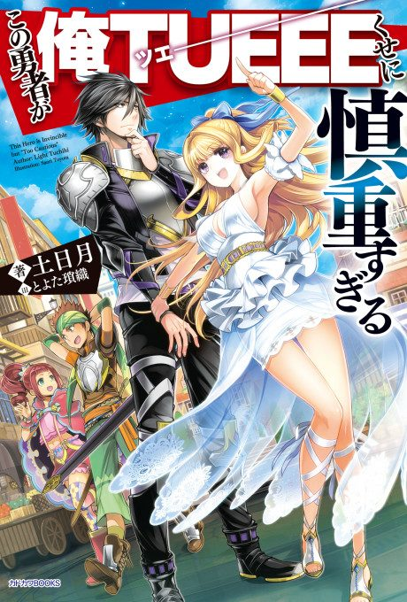

Anime
Anime
Light novel2019 · Action, Adventure, Comedy
Cautious Hero: The Hero Is Overpowered but Overly Cautious
慎重勇者～この勇者が俺ＴＵＥＥＥくせに慎重すぎる～
AniList7.3
Animeter—
Episodes12 ep
SourceVol. 5
Anime finished. Where does the story go next?
Start at Volume5
The anime ends at the end of light novel volume 4, so start at volume 5. The light novel is on hiatus after volume 7.
14ongoing
Season 1Start reading here